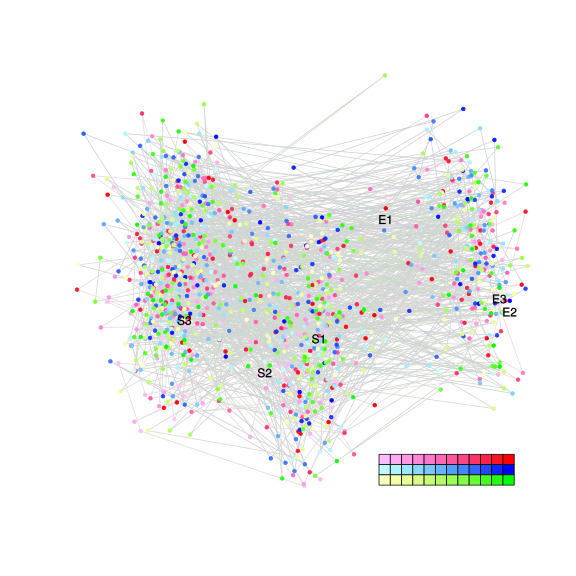
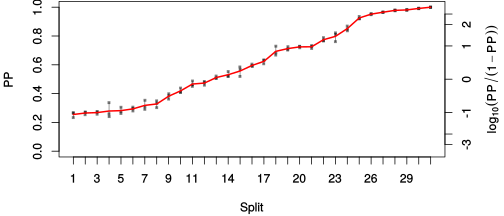
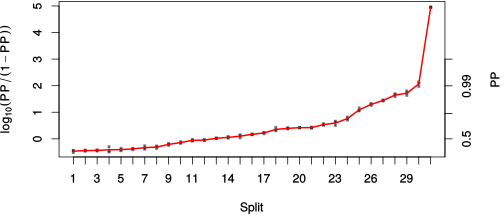

| chain # | burnin | subsample | Iterations (remaining) | command line | subdirectory | directory |
|---|---|---|---|---|---|---|
| 1 | 10000 | 1 | 90000 | /usr/local/bali-phy-3.0-beta2/bin/bali-phy E7_AA_red3_selAll_all4Manatees_PePV1.fas -s 52643 -n E7_red3_selAll_all4Manatees_PePV1_c1 | E7_red3_selAll_all4Manatees_PePV1_c1-1 | /home/willemse/data/trees/BaliPhy |
| 2 | 10000 | 1 | 90000 | /usr/local/bali-phy-3.0-beta2/bin/bali-phy E7_AA_red3_selAll_all4Manatees_PePV1.fas -s 56891 -n E7_red3_selAll_all4Manatees_PePV1_c2 | E7_red3_selAll_all4Manatees_PePV1_c2-1 | /home/willemse/data/trees/BaliPhy |
| 3 | 10000 | 1 | 90000 | /usr/local/bali-phy-3.0-beta2/bin/bali-phy E7_AA_red3_selAll_all4Manatees_PePV1.fas -s 62813 -n E7_red3_selAll_all4Manatees_PePV1_c3 | E7_red3_selAll_all4Manatees_PePV1_c3-1 | /home/willemse/data/trees/BaliPhy |
| P(data|M) = -8239.297 +- 1.790 | Complete sample: 268095 topologies | 95% Bayesian credible interval: 254625 topologies |
Phylogeny Distribution

| Partition support: Summary |
| Partition support graph: SVG |
{kind=link}
| 50% consensus | Newick (+PP) | SVG | |||||
| 66% consensus | Newick (+PP) | SVG | |||||
| 80% consensus | Newick (+PP) | SVG | |||||
| 90% consensus | Newick (+PP) | SVG | |||||
| 95% consensus | Newick (+PP) | SVG | |||||
| 99% consensus | Newick (+PP) | SVG | |||||
| 100% consensus | Newick (+PP) | SVG | |||||
| MAP | Newick (+PP) | SVG | |||||
| greedy | Newick (+PP) | SVG |
{kind=link}
{kind=link}
{kind=link}
{kind=link}
{kind=link}
{kind=link}
{kind=link}
{kind=link}
Alignment Distribution
Partition 1
| Diff | Min. %identity | # Sites | Constant | Informative | ||||
|---|---|---|---|---|---|---|---|---|
| Initial | FASTA | HTML | Diff | 1.65% | 238 | 1 (0.42%) | 177 (74.4%) | |
| Best (WPD) | FASTA | HTML | AU | 1.13% | 714 | 1 (0.14%) | 256 (35.9%) |
Mixing
{kind=link}
{kind=link}
| burnin (scalar) | ESS (scalar) | ESS (partition) | ASDSF | MSDSF | PSRF-CI80% | PSRF-RCF |
|---|---|---|---|---|---|---|
| 1455 | 515.4 | 445.945 | 0.014 | 0.051 | 1.002 | 1.008 |
Projection of RF distances for the first 3 chains3D | Variation of split PPs across chains |
Scalar variables
| Statistic | Median | 95% BCI | ACT | ESS | burnin | PSRF-CI80% | PSRF-RCF |
|---|---|---|---|---|---|---|---|
| prior | -1164 | (-1314, -1022) | 191.5 | 1410 | 1429 | 1.001 | 1.005 |
| prior_A1 | -1298 | (-1444, -1154) | 190.4 | 1417 | 683 | 1.001 | 1.006 |
| likelihood | -8165 | (-8230, -8098) | 251.1 | 1075 | 1455 | 1.001 | 1.003 |
| logp | -9328 | (-9457, -9210) | 110 | 2454 | 740 | 1.002 | 1.001 |
| Heat.beta | 1 | ||||||
| Scale1 | 19.67 | (14.58, 25.82) | 1.549 | 174330 | 140 | 1 | 1.003 |
| S1.F.pi.A | 0.05805 | (0.04891, 0.06772) | 8.953 | 30157 | 329 | 1 | 1.004 |
| S1.F.pi.R | 0.04802 | (0.03837, 0.05787) | 19.18 | 14078 | 332 | 0.9996 | 1.001 |
| S1.F.pi.N | 0.03653 | (0.02946, 0.04393) | 18.1 | 14915 | 301 | 1 | 0.9988 |
| S1.F.pi.D | 0.07382 | (0.06272, 0.08524) | 34.35 | 7861 | 461 | 0.9996 | 1.005 |
| S1.F.pi.C | 0.03877 | (0.02921, 0.04909) | 15.41 | 17518 | 314 | 1 | 1.004 |
| S1.F.pi.Q | 0.04392 | (0.03629, 0.05196) | 16.2 | 16667 | 420 | 1 | 1 |
| S1.F.pi.E | 0.07471 | (0.06359, 0.08658) | 40.39 | 6685 | 554 | 0.9998 | 1.001 |
| S1.F.pi.G | 0.07943 | (0.06629, 0.09346) | 11.53 | 23410 | 391 | 1 | 1.008 |
| S1.F.pi.H | 0.02895 | (0.02225, 0.03632) | 9.324 | 28957 | 384 | 1 | 0.9978 |
| S1.F.pi.I | 0.03384 | (0.02673, 0.04153) | 9.744 | 27708 | 449 | 1 | 0.9982 |
| S1.F.pi.L | 0.09009 | (0.07615, 0.1046) | 103.4 | 2611 | 455 | 1 | 0.9993 |
| S1.F.pi.K | 0.02274 | (0.01708, 0.029) | 11.04 | 24446 | 446 | 0.9995 | 0.9915 |
| S1.F.pi.M | 0.00799 | (0.004915, 0.01154) | 8.281 | 32606 | 325 | 1 | 1.006 |
| S1.F.pi.F | 0.043 | (0.03355, 0.05282) | 22.12 | 12205 | 704 | 0.9996 | 0.992 |
| S1.F.pi.P | 0.07238 | (0.05998, 0.08559) | 23.25 | 11613 | 393 | 1.001 | 1 |
| S1.F.pi.S | 0.08507 | (0.07404, 0.09659) | 21.61 | 12491 | 274 | 1.001 | 0.9905 |
| S1.F.pi.T | 0.06052 | (0.05101, 0.07058) | 9.889 | 27304 | 629 | 1 | 0.9977 |
| S1.F.pi.W | 0.007967 | (0.003963, 0.01262) | 9.11 | 29637 | 238 | 1 | 0.9998 |
| S1.F.pi.Y | 0.03035 | (0.0225, 0.03875) | 10.55 | 25590 | 438 | 1 | 0.998 |
| S1.F.pi.V | 0.06097 | (0.05124, 0.07096) | 11.6 | 23285 | 581 | 0.9999 | 1.001 |
| I1.RS07.meanIndelLengthMinus1 | 3.542 | (2.708, 4.5) | 74.52 | 3623 | 390 | 1.001 | 0.9986 |
| I1.RS07.logLambda | -3.328 | (-3.582, -3.083) | 99.66 | 2709 | 384 | 1.001 | 1.006 |
| |A1| | 643 | (571, 716) | 523.8 | 515 | 440 | 0.9965 | 1.003 |
| #indels1 | 180 | (155, 207) | 179.8 | 1501 | 683 | 0.9612 | 1.006 |
| |indels1| | 864 | (741, 992) | 62.24 | 4338 | 526 | 0.9939 | 1.002 |
| #substs1 | 1510 | (1442, 1571) | 439.5 | 614 | 440 | 0.9881 | 1.004 |
| Scale1*|T| | 25.34 | (23.18, 27.65) | 60.69 | 4448 | 212 | 1 | 1.003 |
| |A| | 643 | (571, 716) | 523.8 | 515 | 440 | 0.9965 | 1.003 |
| #indels | 180 | (155, 207) | 179.8 | 1501 | 683 | 0.9612 | 1.006 |
| |indels| | 864 | (741, 992) | 62.24 | 4338 | 526 | 0.9939 | 1.002 |
| #substs | 1510 | (1442, 1571) | 439.5 | 614 | 440 | 0.9881 | 1.004 |
| |T| | 1.29 | (0.9572, 1.666) | 1 | 270003 | 128 | 1 | 1 |